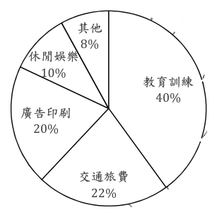
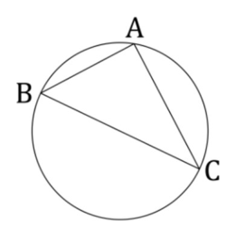
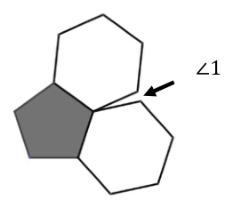
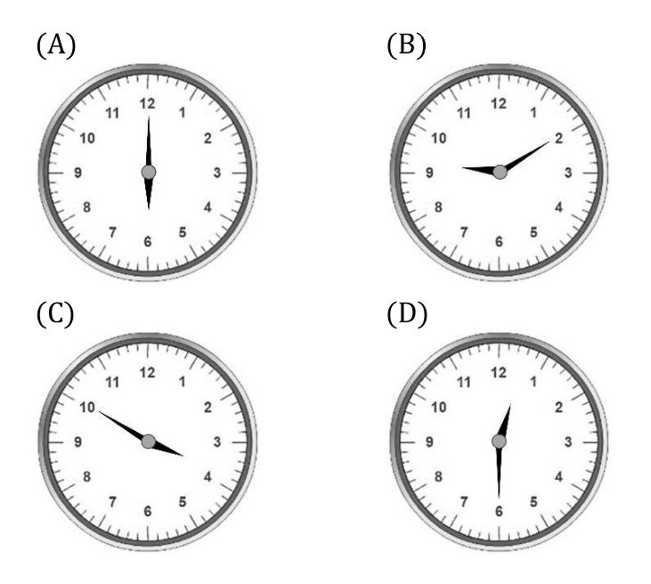
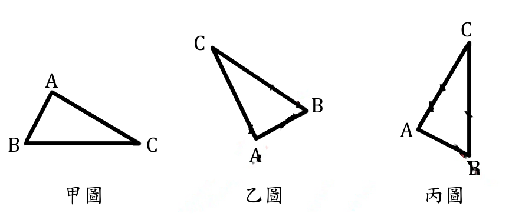

開卷有益 ／
教師檢定 ／ 國小・數學能力測驗 ／ 111 年111 年教師檢定國小・數學能力測驗試題與答案
這一頁是民國 111 年教師檢定國小・數學能力測驗的整份歷屆試題，共 26 題，題目與標準答案出自教育部教師資格考試歷屆試題（受託國立臺灣師範大學心理與教育測驗研究發展中心），其中 26 題附有詳解。以下逐題列出題幹、選項與答案；要計時作答或記錄成績，請用線上練習。
教育部原始場次代碼：tqa11130
線上作答這一科 →
全部 26 題
第 1 題
已知 \(x\)、\(y\) 為實數，若 \(|x-2|+\sqrt{y+2}=0\)，則 \(x+y=\)?
（A） \(-2+\sqrt{2}\)（B） 0（C） \(2+\sqrt{2}\)（D） 4答案：（B）
詳解與考點 正解：本題利用絕對值與根式的非負性質：對任意實數，|x-2|≥0 且 √(y+2)≥0（根式在實數範圍內取算術根，恆為非負）；兩個非負數之和等於 0，唯一可能是兩者皆為 0。故 |x-2|＝0 得 x=2；√(y+2)＝0 兩邊平方得 y+2=0，即 y＝-2。故 x+y=2+(-2)＝0，選（B）。
A、C：（A）-2+√2 與（C）2+√2 皆把 |x-2| 與 √(y+2) 誤當成同一個未知式參與計算（例如誤將兩式相減、相加後直接開根號，或誤把 x、y 混合代入單一方程式求解），導致式中殘留無理數 √2；正確解法中 x、y 是各自獨立由「非負和為 0」拆解出兩條各自成立的等式，計算過程不會出現根號殘留。
D：（D）4 是把 y+2=0 誤看成 y=2（漏看負號，或誤以為等式為 y-2=0），導致 x+y=2+2=4 的錯誤結果；正確拆解 √(y+2)＝0 平方後得 y+2=0，須將 2 移到等號右側取負，即 y＝-2。
本題考點：絕對值與根式的非負性判定。|A|≥0 與 √B≥0（B≥0 為定義域限制）恆成立，若兩個非負式之和為 0，則各自必為 0；掌握此性質即可將兩變數的方程式拆解為兩條各自求解的簡單等式，避免誤將兩式聯立成單一方程式處理。
第 2 題
已知小花在 1996 年是 \(x\) 歲, 在 1993 年時小浩的年齡是小花的 2 倍。問小浩在 2022 年是幾歲?
（A） \(2(x-3)+29\)（B） \(2(x-3)+30\)（C） \(2x+29\)（D） \(2x+26\)答案：（A）
詳解與考點 正解：設小花在1996年為x歲，1993年（往前推1996-1993=3年）小花為x-3歲。已知1993年小浩年齡為小花的2倍，故小浩在1993年為2(x-3)歲。1993年到2022年經過2022-1993=29年，故小浩在2022年為2(x-3)+29歲，選項A正確。
B：（B）2(x-3)+30，計算方式與A相同僅經過年數不同——將1993年到2022年的差算成30年，正確應為2022-1993=29年，屬於年數加減的計算錯誤。
C：（C）2x+29，經過年數29正確，但小浩1993年的年齡誤算為2x——直接把小花1996年的x歲當成1993年的年齡代入2倍關係，未先將x換算為1993年的x-3歲，屬於年代對應錯誤（漏了往前推算3年這一步）。
D：（D）2x+26，同時犯了C選項「未將x換算為1993年年齡（x-3）」的錯誤，又把經過年數算成26年（而非正確的29年），是兩處計算同時出錯的組合。
本題考點：跨年度年齡問題的代數列式。解題關鍵有二：一是先確認題目給定的變數（x）所對應的年份，再換算至比例關係成立的那個年份（1993年小花為x-3歲，而非x歲）；二是正確計算年份間隔（1993至2022相差29年）；兩個環節任一出錯都會導致列式錯誤。
第 3 題
有一學會要辦活動，所須支付的費用包括場地費 2000 元、餐費每人 500 元(含學員及 4 名工作人員)。若學會僅向每位學員收取報名費 600 元，則至少要有多少位學員報名，才能達到收支平衡？
（A） 20（B） 24（C） 30（D） 40答案：（D）
詳解與考點 正解：設報名學員人數為n人。活動總支出＝場地費2000元＋餐費（學員與工作人員合計）500×(n+4)元＝2000+500n+2000=4000+500n（元）。總收入＝報名費600×n（元）。收支平衡的條件是收入不低於支出：600n≥4000+500n，兩邊同減500n，得100n≥4000，兩邊同除以100，得n≥40。故至少須有40位學員報名才能達到收支平衡，選（D）。驗算：n=40時，支出＝4000+500×40=24000（元），收入＝600×40=24000（元），收支恰好平衡，成立。
A（20）：n=20時，支出＝4000+500×20=14000（元），收入＝600×20=12000（元），收入小於支出，虧損2000元，尚未達收支平衡，屬明顯低估所需人數。
B（24）：n=24時，支出＝4000+500×24=16000（元），收入＝600×24=14400（元），收入仍小於支出，虧損1600元，同樣未達平衡。
C（30）：n=30時，支出＝4000+500×30=19000（元），收入＝600×30=18000（元），收入仍小於支出1000元，是最接近正解卻仍不足的選項，容易讓人誤以為已經打平，須實際代入驗算才能確認尚未達到收支平衡。
本題考點：一元一次不等式（linear inequality）的應用——收支平衡問題。解題步驟為先列出總支出（固定費用＋變動費用，注意變動費用的計算基數是否包含題目額外提及的人數，如本題的4名工作人員）與總收入的代數式，再以「收入≧支出」列不等式求解，最後代入驗算確認。
第 4 題
某公司編列行政費用包括休閒娛樂等五個項目,七月份共支出40000元,其費用支出圓形圖如下: 八月份因辦理員工旅遊活動,休閒娛樂費支出比七月份增加了8000元,其餘項目金額和七月份相同。問休閒娛樂費在八月份費用支出圓形圖中,其圓心角為幾度?

（A） 36（B） 72（C） 90（D） 108答案：（C）
詳解與考點 正解：由圓形圖可讀出七月份休閒娛樂費占10％。七月份總支出為40000元，所以休閒娛樂費＝40000×10％＝4000元。八月份增加8000元後，休閒娛樂費＝4000+8000=12000元；其餘項目金額不變，因此八月份總支出＝40000+8000=48000元。休閒娛樂費所占比例＝12000÷48000=1/4=25％，圓心角＝360×25％＝90度，故選C。
A：36度相當於全圓的36÷360=10％，即直接沿用七月份圖中的比例，漏算休閒娛樂費增加8000元後，占八月份總支出的比例已改變。
B：72度相當於20％。這可能是把七月份圖中20％的廣告印刷費誤當成休閒娛樂費，或未依八月份的新金額重新計算比例；圖中休閒娛樂費原本標示為10％。
D：108度相當於30％。若把八月份休閒娛樂費12000元錯除以40000元，會得到30％；但40000元是七月份總支出，八月份總支出已因增加8000元而成為48000元。
本題考點：圓形圖（pie chart）與百分率，圓心角占360度的比例等於該項目占總量的比例；總量改變後的百分率計算，須先求各項新金額與新總額，再換算圓心角。
第 5 題
有兩個敘述如下: 甲、如果兩個不同的數互質,那麼這兩個數一定都是質數 乙、如果兩個數是不同的質數,那麼這兩個數一定互質 下列何者正確?
（A） 甲錯誤、乙正確（B） 甲錯誤、乙錯誤（C） 甲正確、乙正確（D） 甲正確、乙錯誤答案：（A）
詳解與考點 正解：
甲敘述「如果兩個不同的數互質，那麼這兩個數一定都是質數」為錯誤：互質僅代表兩數的最大公因數為1，並不代表兩數本身皆為質數，例如4與9的最大公因數為1（互質），但4=2×2、9=3×3皆非質數，即為反例；1與任何數的最大公因數皆為1（互質），但1本身也不是質數。乙敘述「如果兩個數是不同的質數，那麼這兩個數一定互質」為正確：質數的正因數只有1與自身，兩個不同的質數之間除了1以外沒有其他共同因數，最大公因數必為1，故必定互質。因此正確組合為「甲錯誤、乙正確」，選項A正確。
B（甲錯誤、乙錯誤）：對甲的判斷正確，但誤將乙也判斷為錯誤——忽略了兩個不同質數的正因數僅有1與自身、彼此不可能有大於1的公因數這項性質，錯誤地否定了乙必然成立的結論。
C（甲正確、乙正確）：誤將甲判斷為正確，未能舉出如4與9這類「互質但皆非質數」的反例，錯把「最大公因數為1」直接等同於「兩數皆為質數」，混淆了互質與質數兩個不同的概念。
D（甲正確、乙錯誤）：同樣誤判甲為正確（理由與C相同，忽略反例），且進一步誤判乙為錯誤，兩項判斷皆與正確結論相反。
本題考點：質數與互質兩個概念的區辨。質數是僅有1與自身兩個正因數的數；互質是指兩數的最大公因數為1，判斷方式應各自回到定義驗證，並留意「兩數互質」不蘊含「兩數皆為質數」，但「兩個不同質數」必然蘊含「兩數互質」這組不對稱的邏輯關係。
第 6 題
某國小附近有3個路口,於每個上課日的早上,每個路口都要安排一位導護老師。已知該校有15位老師負責導護,且這學期上課日共有105天,問每位老師這學期平均要輪值幾天?
（A） 35（B） 21（C） 7（D） 5答案：（B）
詳解與考點 正解：該校每個上課日早上共有3個路口需要導護，故每個上課日共需3人次的導護人力；上課日共105天，全學期總計需要3×105=315人次的導護。這315人次由15位老師平均分攤，故每位老師這學期平均輪值天數＝315÷15=21天，選B。
A：35是誤算105÷3=35，把上課總天數直接除以路口數，卻遺漏了應再除以導護老師人數（15）這一步。
C：7是誤算105÷15=7，把上課總天數直接除以老師人數，卻遺漏了每天需要3位老師分守3個路口（漏乘路口數3），導致結果被低估。
D：5是誤算15÷3=5，僅將老師人數與路口數相除，完全未代入上課總天數105，計算邏輯與題目所求（每人平均輪值天數）不符。
本題考點：總人力需求的計算與平均分攤。解題步驟為先求總需求人次（每日所需人力×總天數），再以總需求人次除以可分攤人數求得平均值；常見誤區是漏乘或漏除其中一個關鍵因子（路口數、總天數、老師人數）。
第 7 題
小明、小華兩人登山走的路徑相同,小明花了1小時、小華花了30分鐘,問小明的平均速率和小華的平均速率之比為何?
（A） 1 : 2（B） 2 : 1（C） 3 : 10（D） 10 : 3答案：（A）
詳解與考點 正解：設兩人所走的路徑長度為 d。小明花費 1 小時，平均速率＝d÷1=d；小華花費 30 分鐘＝0.5 小時，平均速率＝d÷0.5=2d。故小明平均速率：小華平均速率＝d:2d=1:2，選（A）。同一段路徑走得越快，所需時間越短，速率與時間成反比：小明所需時間是小華的 2 倍，故小明的速率是小華的 1/2，比例即為 1:2，可作為驗算。
B：（B）2:1 把比例的前後項顛倒——花費時間較長者速率較慢，小明花費時間較長（1 小時大於 30 分鐘），速率理應較小華慢，比值應為 1:2 而非 2:1。
C、D：（C）3:10 與（D）10:3 皆源自將 30 分鐘誤換算為非 0.5 小時的其他數值（例如把「30 分鐘」與「1 小時等於 60 分鐘」混合運算、未先統一單位），導致比例中出現與時間換算不符的 3、10 等數字，兩者僅是分子分母對調，皆非速率與時間成反比的正確關係。
本題考點：速率、路徑與時間的反比關係。同一段路徑（距離固定）之下，兩人平均速率之比等於所需時間之反比；解題關鍵在於先將不同單位（小時、分鐘）換算一致，再以「距離÷時間」求出速率或直接用時間反比判斷比例關係，避免時間單位未統一即比較。
第 8 題
在 \(\triangle ABC\) 中, 已知 \(\angle A = 75^\circ\)、\(\angle B = 30^\circ\), 問下列何者正確?
（A） \(\overline{AB} > \overline{AC}\)（B） \(\overline{AB} > \overline{BC}\)（C） \(\overline{AC} = \overline{BC}\)（D） \(\overline{AC} = \overline{AB}\)答案：（A）
詳解與考點 正解：三角形內角和為180°，已知∠A=75°、∠B=30°，故∠C=180°－75°－30°=75°，因此∠A=∠C=75°。依「等角對等邊」，∠A的對邊BC與∠C的對邊AB相等，即AB=BC。又因∠C=75°大於∠B=30°，依「大角對大邊」，∠C的對邊AB大於∠B的對邊AC，即AB>AC，故選項A「AB>AC」正確，選（A）。
B：選項B「AB>BC」錯誤，因AB與BC分別是∠C=75°與∠A=75°的對邊，兩角相等則對邊應相等，即AB=BC，並非AB較大。
C：選項C「AC=BC」錯誤，AC是∠B=30°的對邊，BC是∠A=75°的對邊，兩角不相等，依「等角對等邊」的逆敘述，對邊也不應相等。
D：選項D「AC=AB」錯誤，AC對應∠B=30°，AB對應∠C=75°，兩角同樣不相等，對邊自然也不相等，此選項把非等角的兩邊誤判為相等。
本題考點：三角形的「等角對等邊」與「大角對大邊」定理。解題步驟為先利用內角和180°求出第三角，比較三個內角的大小關係，再依定理將角的大小關係轉換成對邊的大小或相等關係；關鍵在於正確辨認每一邊分別是哪一個角的對邊，避免邊與角的對應關係配對錯誤。
第 9 題
已知一圓上有A、B、C三點, 且 \(\overline{AB} = 6\)、\(\overline{AC} = 8\)、\(\overline{BC} = 10\), 如下圖: 問此圓的半徑為何?

（A） 3（B） 4（C） 5（D） 7答案：（C）
詳解與考點 正解：三邊6、8、10符合畢氏定理，因此可用直角三角形的外接圓性質求半徑。6²＋8²＝36+64=100=10²，故∠A為直角、BC=10為斜邊。直角三角形的斜邊是外接圓直徑，所以直徑＝10，半徑＝10÷2=5，選C。
A：（A）3是6÷2，誤把直角邊AB當成直徑。
B：（B）4是8÷2，誤把直角邊AC當成直徑。
D：（D）7不符合由直徑10換算半徑10÷2=5的結果。
本題考點：畢氏定理與直角三角形外接圓；先以兩股平方和確認斜邊，再將斜邊長除以2得到外接圓半徑。
第 10 題
足球是由 12 塊黑色正五邊形和 20 塊白色正六邊形所構成, 每個頂點都是兩個正六邊形與一個正五邊形共用, 其部份平面展開圖如下: 問圖中的 \(\angle 1\) 是幾度?

（A） 8（B） 12（C） 24（D） 32答案：（B）
詳解與考點 正解：圖中同一頂點由灰色正五邊形與兩塊白色正六邊形相接。正五邊形的內角為(5−2)×180÷5=108°；正六邊形的內角為(6−2)×180÷6=120°。該頂點已占角度＝108°＋120°＋120°＝348°，一周角為360°，故圖示兩塊白色正六邊形之間的∠1=360°−348°＝12°，選（B）。
A：（A）8°表示頂點周圍已占352°，與正五邊形108°及兩個正六邊形各120°合計348°不符；此值沒有由圖中三個正多邊形內角相加所得的依據。
C：（C）24°是把缺角12°重複計算為兩倍。圖中∠1只是在該頂點尚未被三個多邊形覆蓋的一個角，不是兩個相同缺角的總和。
D：（D）32°會使三個多邊形在該頂點合計只有328°，但實際內角和為348°。此誤答忽略了正五邊形與正六邊形的內角必須分別計算。
本題考點：正多邊形內角（interior angle）可用(n−2)×180÷n求得；一周角（full angle）為360°，共用同一頂點的角度加總後，以360°減去已占角度即可求剩餘角。
第 11 題
甲、乙兩班在某次段考的數學成績盒狀圖如下: 根據盒狀圖的資料，下列敘述何者正確？
（A） 甲班和乙班的考試人數一樣（B） 甲班和乙班數學成績的全距一樣（C） 甲班和乙班數學成績的平均數一樣（D） 甲班和乙班數學成績的中位數一樣答案：（D）
詳解與考點 正解：盒狀圖（箱形圖，box plot）僅能呈現一組資料的五個描述統計量：最小值、第一四分位數（Q1）、中位數、第三四分位數（Q3）與最大值，並無法呈現資料的筆數（考試人數）或算術平均數。因此本題四個選項中，只有「全距」（最大值減最小值，由兩端鬚線端點讀出）與「中位數」（由箱內橫線位置讀出）是盒狀圖本身可以直接判讀的量。依題目所附之甲、乙兩班盒狀圖，正確敘述為「甲班和乙班數學成績的中位數一樣」，故選（D）。
A：「考試人數一樣」盒狀圖的繪製僅依賴五個統計量，並不呈現原始資料筆數，兩班考試人數是否相同無法從盒狀圖判讀，此敘述缺乏圖形依據。
B：「全距一樣」全距雖然是盒狀圖可以直接讀出的量（兩端鬚線端點之差），但依題目所附圖形，甲、乙兩班的鬚線範圍並不相同，此敘述與圖形不符。
C：「平均數一樣」盒狀圖以中位數為核心繪製，並不標示算術平均數；平均數易受極端值影響，未必與中位數相同，此敘述同樣缺乏圖形依據，且平均數本非盒狀圖所能呈現的資訊。
本題考點：盒狀圖（箱形圖）的判讀能力。須掌握盒狀圖僅能呈現最小值、Q1、中位數、Q3、最大值五個統計量，據此可直接讀出中位數與全距，但無法判讀考試人數或平均數；作答時須先辨明「哪些量是圖形本身提供的資訊」，再依實際圖形數值逐一核對選項。
第 12 題
在兩個相同的空量杯中，各自置入一顆相同大小的石頭後，再將甲杯和乙杯的水分別倒入這兩個量杯，且都淹沒石頭。此時，報讀甲、乙兩杯水在量杯上的刻度分別為 40 及 20，問下列敘述何者正確？
（A） 甲杯水體積 = 乙杯水體積的 2 倍（B） 甲杯水體積 = 乙杯水體積的 2 倍 - 石頭體積（C） 甲杯水體積 = 乙杯水體積的 2 倍 + 石頭體積（D） 甲杯水體積 = 乙杯水體積的 2 倍 + 石頭體積的 2 倍答案：（C）
詳解與考點 正解：設石頭體積為 s，甲杯實際倒入的水體積為 W甲，乙杯實際倒入的水體積為 W乙。因兩量杯皆已放入相同大小的石頭，倒水後量杯上的刻度讀數，反映的是「水體積 + 石頭體積」的總和（石頭完全淹沒，其體積亦計入水位刻度）。故甲杯刻度：W甲+s=40；乙杯刻度：W乙+s=20，由此得 W甲=40-s、W乙=20-s。將 W乙 乘以 2:2×W乙=2×(20-s)=40-2s。比較兩者：W甲-2×W乙=(40-s)-(40-2s)=s，即 W甲=2×W乙+s，亦即「甲杯水體積 = 乙杯水體積的 2 倍 + 石頭體積」，選項（C）正確。
A：「甲杯水體積 = 乙杯水體積的 2 倍」直接假設 W甲=2×W乙，但由上述推導 W甲=2×W乙+s，除非石頭體積 s=0，否則兩者必有 s 的差額，選項A遺漏了石頭體積這項差額，方向上少算了一段。
B：「甲杯水體積 = 乙杯水體積的 2 倍 - 石頭體積」寫成 W甲=2×W乙-s，與正確推導 W甲=2×W乙+s 相比，差額的正負號恰好算反——把應該加上的石頭體積，誤算成要扣除，判斷石頭對水位的影響方向時發生錯誤。
D：「甲杯水體積 = 乙杯水體積的 2 倍 + 石頭體積的 2 倍」寫成 W甲=2×W乙+2s，把石頭體積這一項也連同乙杯水體積一起乘以2倍，多算了一倍石頭體積；正確做法中，石頭體積 s 只在等式兩端「刻度=水+石頭」中各出現一次，不應隨乙杯水體積一併倍增。
本題考點：等量關係式的建立與代數運算。本題須先理解「量杯刻度＝水體積＋固體排開的體積」這一物理關係（阿基米德原理的應用），分別為甲、乙兩杯列出方程式，再透過代數運算求出兩者水體積之間的關係式，而非直接對兩個刻度數字做簡單的比例換算。
第 13 題
甲、乙、丙三人先各出資 800 元合購一箱蘋果，但在分蘋果時，甲和乙都比丙多拿了 2 公斤。若蘋果每公斤的價錢一樣，且以分得蘋果的重量來調整每人需支付的錢，則 甲和乙就必須分別再給丙 100 元。問丙拿了幾公斤的蘋果？
（A） 4（B） 6（C） 12（D） 14答案：（A）
詳解與考點 正解：設丙分得 x 公斤蘋果，則甲、乙各分得 (x+2) 公斤，三人合購蘋果總價 800×3=2400 元。依題意，改以重量比例分攤價款後，甲、乙須各多付 100 元給丙，代表：甲（或乙）依重量計算後應付金額為 800+100=900 元；丙依重量計算後應付金額為 800-100-100=600 元（三者依重量計算後合計仍為 900+900+600=2400 元，與總價相符，驗算一致）。由於每公斤單價相同，設每公斤價格為 p，可列方程式：p×(x+2)=900，且 p×x=600。兩式相減得 p×(x+2)-p×x=900-600，即 p×2=300，解得 p=150（元/公斤）；代回 p×x=600，得 x=600÷150=4，故丙拿了 4 公斤蘋果，選項（A）正確。驗算：丙 4 公斤、甲乙各 6 公斤，總重 4+6+6=16 公斤，16×150=2400 元，與總價相符。
B：（B）6 公斤較可能是把每公斤價格算對（150 元），卻誤將丙的變數 x 直接代入甲（或乙）應付的 900 元方程式（漏加 2 公斤差距），即誤列 150x=900，解得 x=6；正確作法必須是 (x+2) 而非 x 去對應 900 元這筆款項，此誤把「甲乙的錢」套用在「丙的重量」上。
C：（C）12 公斤較可能源自算錯每公斤單價：誤以為甲、乙各多付的 100 元，就是他們比丙多拿的 2 公斤蘋果本身的價值，於是算出每公斤 100÷2=50 元（正確單價其實是 150 元）；再用這個錯誤單價代入丙應付的 600 元，50x=600，解得 x=12。這個誤解的癥結，是把「多付的錢」直接等同「多拿重量的價值」，卻忽略了 800 元本身就是三人依原始等額分攤（而非依重量）付出的錢，兩者基準不同，不能直接相除。
D：（D）14 公斤同樣源自上述 50 元每公斤的錯誤單價，但改用「甲（或乙）原始等額付款 800 元」（尚未調整前的金額）去對應 (x+2) 公斤，即 50×(x+2)=800，解得 x+2=16，x=14；此誤把調整「前」的原始付款金額，套用在調整後才成立的單價關係式中，兩者屬於不同基準的數字，不可混用。
本題考點：等值交換與按比例分攤問題。解題關鍵有三步：（1）先辨別「原始等額分攤」與「依重量調整後應付金額」是兩組不同基準的數字，不可混用；（2）正確設立變數對應關係（丙為 x、甲乙為 x+2）；（3）用兩人（或兩組）應付金額之差求出單位價格，再代回求解，最後以總重乘單價驗算是否等於合購總價。
第 14 題
有三個關於「分數」的學習內容如下: 甲、用約分、擴分處理等值分數 乙、進行同分母分數的加減問題 丙、解決異分母分數的除法問題 根據上述的學習內容,最適當的教學安排順序為何?
（A） 甲→乙→丙（B） 甲→丙→乙（C） 乙→甲→丙（D） 乙→丙→甲答案：（C）
詳解與考點 正解：依國小數學領域中「分數」概念的難易度與先備知識脈絡排列教學順序：應先教「乙、同分母分數的加減」，因其僅需對分子做加減、分母保持不變，概念最為單純，不需先備的等值分數轉換能力，適合作為分數運算的起點。其次教「甲、用約分、擴分處理等值分數」，這是進行異分母運算（通分）不可或缺的先備技能，須先理解等值分數的概念，才能進一步處理分母不同的分數運算。最後教「丙、解決異分母分數的除法問題」，此為三者中最複雜的一環，除法運算本身即較加減複雜，且異分母又須同時具備等值分數（通分）的先備能力，適合安排在教學順序的最後。故最適當順序為乙→甲→丙，選項C正確。
A、B：選項A（甲→乙→丙）與選項B（甲→丙→乙）皆將「約分、擴分處理等值分數」排在「同分母分數加減」之前，忽略了同分母加減本身並不需要約分、擴分這項先備技能，可以更早引入作為分數運算的起點；選項B更進一步將難度最高的異分母除法（丙）排在同分母加減（乙）之前，錯置了由簡至繁的教學順序。
D：選項D（乙→丙→甲）雖正確地將同分母加減（乙）排在最前，卻將難度最高的異分母除法（丙）排在約分擴分（甲）之前，忽略了異分母除法必須以等值分數（通分）為先備基礎，理應排在甲之後，此順序邏輯不通。
本題考點：國小數學分數概念教學的先備知識序列。核心判準是辨明「同分母加減」（不需通分）、「約分擴分／等值分數」（通分的基礎技能）、「異分母除法」（同時需要通分與除法運算）三者之間的先備依存關係，依「由簡至繁、由基礎技能到綜合應用」的原則排定教學順序。
第 15 題
教師設計一教學活動：「請學童聽到一個數詞時，拿出相對應數量的具體物，或畫出相對應數量的圖像表徵。」此活動是要讓學童進行「認識數」的哪一種學習活動？
（A） 說（B） 讀（C） 寫（D） 做答案：（D）
詳解與考點 正解：「認識數」教學常以「說、讀、寫、做」四種活動類型組織，其中「做」指的是將抽象的數詞轉換為實際操作或具體表徵的歷程，如拿出對應數量的實物或畫出對應數量的圖像。本活動要求學童聽到一個數詞後，拿出相對應數量的具體物，或畫出相對應數量的圖像表徵，正是把口語數詞轉譯為操作與表徵的歷程，屬於「做」，故選（D）。
A：「說」指學童能以口語唸出或表達數詞（如看到具體物數出「三個」），著重的是口語表達的輸出，並未涉及題幹中拿出實物或畫圖等操作、表徵歷程。
B：「讀」指看到阿拉伯數字或文字數詞時能正確唸讀出來，著重的是符號到語音的轉換，與題幹「聽到數詞、進行操作或畫圖」的方向相反（題幹是語音到操作，而非符號到語音）。
C：「寫」指能寫出阿拉伯數字或國字數字，著重的是語音或概念到書寫符號的轉換，同屬符號輸出層次，並未涉及題幹所描述的具體操作物或圖像表徵的建構。
本題考點：幼兒與國小低年級「認識數」教學的「說、讀、寫、做」四項活動類型。「說」「讀」「寫」皆屬符號（口語或書面）層次的輸出入，「做」則是連結抽象數詞與具體量、圖像表徵的操作歷程，是數概念具體化、內化的關鍵環節，作答時須辨認題幹描述的是符號轉換還是操作／表徵建構。
第 16 題
對低年級學童而言，下列哪一個時鐘鐘面時刻的報讀最困難？

本題選項為上圖中的 A／B／C／D，請對照圖片作答。
答案：（C）
詳解與考點 正解：四個鐘面中，短針落在 3 與 4 之間且明顯偏向 4、長針指向 10 的那一面是 3 時 50 分，報讀難度最高。學童必須同時處理兩件事——把長針所指的刻度 10 換算成 50 分（刻度數乘以 5），以及認出短針雖然快到 4，時仍應報 3 而非 4。這兩個難點疊加，正是低年級報讀時鐘最典型的錯誤來源，故選（C）。
A：短針指向 6、長針正對 12，是 6 時整。整點是時鐘教學最先建立的類型，長針對準 12 就不必做分的換算，短針也正對數字沒有歸屬疑義，難度最低。
B：短針指向 9、長針指向 2，是 9 時 10 分。雖然要把刻度 2 換算成 10 分，但短針幾乎正對 9，不會產生「該報 9 還是 10」的猶豫，難度低於正解那一面。
D：短針在 12 稍右、長針指向 6，是 12 時 30 分。半點是繼整點之後最早教的類型，長針指向 6 對應 30 分屬高頻經驗，時的歸屬也明確，難度同樣低於正解那一面。
本題考點：時鐘報讀的難度階層。低年級報讀時刻的難度由三個變因決定——長針是否落在 12（整點）或 6（半點）這類高頻位置、長針刻度是否需要乘以 5 換算、以及短針是否已接近下一個數字而造成「時」的歸屬混淆。命題若把「需換算」與「短針接近下一格」兩個變因放進同一個鐘面，難度最高。教學順序應是先整點、再半點、再五分刻度，最後才處理短針接近整點的情形。
第 17 題
有關「面積公式」的教材，通常會以下列哪個圖形做為其它圖形公式導出的基礎？
（A） 梯形（B） 長方形（C） 三角形（D） 平行四邊形答案：（B）
詳解與考點 正解：國小面積教材的公式推導採取層層轉化的順序：先以方格單位直接數格，得出長方形面積＝長×寬，這是全部推導鏈最初、也是唯一以「數格」方式直接定義的公式；其後平行四邊形以割補法轉化為長方形以導出面積公式，三角形視為平行四邊形之半導出公式，梯形再轉化為三角形或平行四邊形導出公式。因此長方形是其餘圖形公式共同仰賴的推導基礎，選B。
A：梯形的面積公式（上底＋下底）×高÷2，是把梯形分割或拼接成三角形／平行四邊形後才推得，屬於推導鏈末端被推導出的圖形，而非基礎。
C：三角形面積＝底×高÷2，是取兩個全等三角形拼成平行四邊形、再由平行四邊形面積減半而來，其公式成立仍須先確立平行四邊形（進而長方形）的面積公式，故三角形本身也是被推導者。
D：平行四邊形面積＝底×高，是透過割補（將一側三角形移補到另一側）轉化成長方形後才導出，公式的正確性建立在長方形面積已知的前提上，因此平行四邊形同樣是被推導的圖形，而非最初基礎。
本題考點：國小面積教材的公式推導順序與依存關係。教材以長方形（數格定義）為起點，依序推導平行四邊形、三角形、梯形，後者公式皆建立在前者已確立的基礎上；作答時應辨識何者是「以定義直接得出」而非「經割補轉化才得出」的圖形。
第 18 題
校園的穿堂有一圓柱,教師想讓學童透過測量活動,找出該圓柱的直徑長。問學童應具備下列哪些數學概念,才能完成此任務?
（A） 圓周率、圓心角（B） 圓周率、圓周長（C） 圓面積、圓心角（D） 圓面積、圓周長答案：（B）
詳解與考點 正解：圓柱的直徑無法直接以直尺穿過柱體測量，實務上的作法是先用軟尺繞柱體外圍一圈，量出圓周長，再利用「圓周長等於直徑乘以圓周率」的關係式，以圓周長除以圓周率反推出直徑。因此，學童須具備「圓周率」（周長與直徑的固定比值關係）與「圓周長」（可實際測量的量）兩個概念，才能完成由周長推算直徑的任務，故選（B）。
A：（A）以「圓心角」取代圓周長。圓心角是描述扇形或圓上一段弧張開角度大小的概念，與測量柱體外圍一圈得到的周長無關，也無法用於換算直徑，此選項混淆了角度與長度兩種不同性質的量。
C、D：（C）（D）皆提及「圓面積」。圓面積是圓所占平面空間的大小，屬二維量；測量活動中無法直接量得柱體橫截面的面積（除非先算出半徑，而算半徑正需要先知道直徑或周長），也就是說面積是由半徑或直徑算出的結果，而非測量活動能直接獲得、進而反推直徑的量，故C、D方向錯誤，不能拿一個本身需要先知道直徑才能求得的量，反過來去求直徑。
本題考點：圓的周長公式與圓周率的應用。圓周長等於直徑乘以圓周率，是連結可直接測量的周長與不易直接測量的直徑的關鍵公式；解題步驟為先測周長，再以周長除以圓周率求直徑，須辨明周長（一次量、可直接測）與面積（二次量、須先知道半徑或直徑才能求得）的先後與次方關係差異。
第 19 題
根據「十二年國民基本教育數學領域課程綱要」,在二維表格的學習內容中,可以用列聯表做為例子。問下列哪一個表格是列聯表? 甲、乙、丙、丁四個表格如下：
甲 品項 圍巾 手套 帽子 襪子 數量(個) 1 2 2 3 單價(元) 250 149 300 128 總計 250 298 600 384
乙 星期一 星期二 星期三 星期四 星期五 第一節 國語 數學 國語 數學 國語 第二節 數學 英語 本土語言 自然 數學 第三節 音樂 健康 生活 英語 體育 第四節 體育 自然 綜合活動 國語 社會
丙 甲班 乙班 丙班 總計 男生(人) 13 10 12 35 女生(人) 10 11 8 29 總計(人) 23 21 20 64
丁 車次 2612 2666 2616 2618 起站 高雄 高雄 高雄 高雄 迄站 嘉義 彰化 嘉義 嘉義 高雄 05:35 06:05 07:13 07:50 左營 05:41 06:11 07:19 07:56 楠梓 05:47 06:17 07:25 08:02 橋頭 05:51 06:21 07:31 08:06
（A） 甲（B） 乙（C） 丙（D） 丁答案：（C）
詳解與考點 正解：列聯表是把兩個類別變項交叉分類，在各細格填入對應的「次數（人數／個數）」，並附上列、行邊際總計的二維表格。丙表以「性別（男生、女生）」與「班級（甲班、乙班、丙班）」兩個類別變項交叉，細格內填的是各班男女生「人數」，且附有各班小計與男女生小計的邊際總計，完全符合列聯表兩個類別變項交叉、細格為次數的定義，故選（C）。
A：（A）甲表是以「品項（圍巾、手套、帽子、襪子）」對應「數量、單價、總計」等性質不同的數值，數量、單價、總計並非同一類別變項的次數統計，而是不同性質的量（個數、金額），不符合列聯表兩個類別變項交叉列出次數的定義。
B：（B）乙表是課表，以「節次」與「星期」兩個變項交叉，但細格內填的是「科目名稱」（如國語、數學）這類類別標籤，而非次數，屬排課對照表，並非統計次數的列聯表。
D：（D）丁表是火車時刻表，以「車次」與「站名」交叉，細格內填的是「到站時刻」這類時間資料，同樣不是次數統計，屬時刻查詢表，並非列聯表。
本題考點：列聯表（contingency table）的定義與判讀。列聯表須同時具備「兩個類別變項交叉分類」與「細格內容為次數（計數）」兩項特徵，並常附有邊際總計；作答時須逐一檢視表格的兩個維度分別代表什麼變項、細格內填的究竟是次數、名稱標籤，還是時刻／金額等其他性質的資料，藉以排除表面上是二維表格但並非列聯表的選項。
第 20 題
將一個銳角△ABC的圖卡,呈現三種不同的擺法,如下圖: 甲圖 乙圖 丙圖 對大多數學童而言，哪一種擺法的圖卡要找出「BC上的高」最困難？

（A） 甲圖（B） 乙圖（C） 丙圖（D） 都一樣難答案：（B）
詳解與考點 正解：「BC 上的高」是指自頂點 A 向對邊 BC（或其所在直線）所作的垂線段。學童辨識「高」的難易程度，主要取決於圖卡擺放方式是否貼近學童對「高」的原型印象——底邊呈水平、高由上往下呈鉛直方向。當 BC 邊被擺放成斜邊（既非水平也非鉛直）時，從頂點 A 所作的高既非單純向下、也非單純橫向，學童必須先在心中將圖形「轉正」才能想像垂線的方向，因此最不容易辨識與繪製；依題目所附三種擺法，乙圖正是把三角形整體傾斜擺放、使 BC 成為斜邊的情形，故對大多數學童而言最困難，選（B）。
A、C：（A）甲圖與（C）丙圖的共同特徵，是三角形的某一邊恰好呈現水平或鉛直方向，使高的方向仍與學童熟悉的「水平底邊、鉛直高」或其鏡射情形相符，判斷與繪製相對單純，故都不是最困難的擺法。
D：（D）「都一樣難」忽略了圖卡擺放方向確實會影響學童辨識高的難易程度——當底邊偏離水平或鉛直方向時，學童須經歷心理旋轉才能正確判斷垂線方向，三種擺法的難度並不相同，故此敘述不成立。
本題考點：幾何圖形「心理旋轉」對學童辨識能力的影響，以及三角形高的構圖原則。三角形任一邊皆可為底、其對頂點所作的垂線段即為該邊上的高，與圖形的擺放方向無關；但學童對「高」的認知常受限於「水平底邊、鉛直高」的原型印象，故底邊呈斜向擺放時最容易造成辨識與作圖上的困難。
第 21 題
有些學童會認為「四邊形都是線對稱圖形」，若教師想讓這些學童釐清此迷思概念，問下列哪一個圖形適合做為產生認知衝突的例子？
（A） 筋形（B） 菱形（C） 長方形（D） 平行四邊形答案：（D）
詳解與考點 正解：迷思概念「四邊形都是線對稱圖形」要被推翻，須舉出一個屬於四邊形、卻不是線對稱圖形的反例，藉此讓學童的既有信念與新事實產生衝突。一般（非特殊）平行四邊形只具有一百八十度的旋轉對稱（點對稱），找不到任何一條摺線可以使圖形兩側完全疊合，因此是四個選項中唯一不具線對稱性質的圖形，最適合用來製造認知衝突，故選D。
A：選項所列的四邊形屬於另一種常見的特殊四邊形類型，與菱形、長方形一樣，通常存在至少一條可使圖形兩側完全疊合的對稱軸，仍屬線對稱圖形，無法用來推翻「四邊形都是線對稱圖形」的迷思概念。
B：菱形具有兩條沿對角線方向的對稱軸，對摺後兩側可完全疊合，是線對稱圖形，同樣無法產生認知衝突。
C：長方形具有兩條分別垂直平分對邊的對稱軸，對摺後兩側同樣可完全疊合，是線對稱圖形，一樣不適合作為反例。
本題考點：線對稱圖形（軸對稱）與點對稱圖形（旋轉對稱）的判別，以及教學上運用反例引發認知衝突以澄清迷思概念的策略。判斷四邊形是否為線對稱圖形的方法，是檢驗是否存在至少一條摺線可使圖形完全疊合，而非僅憑圖形名稱或直覺判斷；一般平行四邊形是此類問題中經典的「僅點對稱、非線對稱」反例。
第 22 題
教師布了一數學問題：「3個千、4個百、12個十，合起來是多少？」有四個關於數的知識如下： 甲、數的合成與分解 乙、數的大小比較 丙、位值概念 丁、數的化聚 若學童要正確回答此題，則需要具備哪些知識？
（A） 只有甲、丁（B） 只有丙、丁（C） 只有甲、丙、丁（D） 甲、乙、丙、丁答案：（C）
詳解與考點 正解：「3個千、4個百、12個十合起來是多少」須先理解千、百、十位分別代表的位值大小（丙：位值概念），才能知道「12個十」實際代表的量值；接著要將「12個十」化聚成「1個百加2個十」（丁：數的化聚），使百位的個數變為4加1等於5個；最後再把3個千、5個百、2個十合成一個完整的數3520（甲：數的合成與分解）。位值概念、化聚、合成分解三個步驟缺一不可，才能正確求出答案，故本題需要甲、丙、丁三項知識，選（C）。
A（只有甲丁）：少列丙（位值概念）。若學童不具備位值概念，便無法理解千、百、十各位所代表的量值大小，也無法判斷「12個十」該如何與「4個百」進行單位換算，位值概念是化聚與合成的前提，缺少丙將無法正確作答，故A漏列丙而錯誤。
B（只有丙丁）：少列甲（數的合成與分解）。位值概念與化聚固然是必要的中間步驟，但求出「合起來是多少」的最終總值，仍須將3個千、5個百（4個百經化聚後）、2個十合成單一數值3520，這一步驟正是數的合成能力；缺少甲，學童將無法完成最後把各單位個數整合為總數的動作，故B漏列甲而錯誤。
D（甲乙丙丁）：多列乙（數的大小比較）。本題全程只涉及位值判讀、單位化聚與合成分解，並未要求學童比較任兩個數值的大小關係，數的大小比較是另一項獨立的數概念技能，與本題求合計總值的運算歷程無關，故D因多列不必要的乙而錯誤。
本題考點：位值概念（place value）、數的化聚與數的合成分解，是低年級數與量教學中處理多位數合成問題的三項核心知識。解題步驟為先以位值概念理解各單位所代表的量、再以化聚將超過該位應有個數（如12個十）換算成更高位的單位、最後以合成分解求出總值；「數的大小比較」則是另一項獨立的數概念，與本題求總值的運算歷程無關。
第 23 題
教師在進行文字題的教學時,應避免引導學童利用關鍵字來解題。因為用關鍵字來解題,容易造成學童對題意的不理解,而以錯誤的列式求解。有兩個加減問題如下: 甲、火車上原有 348 人,到某車站後又有 38 人上車,問現在火車上共有幾人? 乙、班上原有 64 本書,爸爸捐一些書給班上後就有 125 本,問爸爸共捐了幾本書? 若學童使用關鍵字來解題,上述哪些問題會算出錯誤答案?
（A） 甲、乙都會算錯（B） 甲、乙都不會算錯（C） 甲會算錯、乙不會算錯（D） 甲不會算錯、乙會算錯答案：（D）
詳解與考點 正解：甲題「火車上原有 348 人，到某車站後又有 38 人上車，問現在火車上共有幾人？」屬於「起始量加變化量等於結果量」的加法應用題，關鍵字「又…上車」引導學童列出加法算式，而本題實際所需運算恰好也是加法：348+38=386，關鍵字策略與正確解法方向一致，故甲題套用關鍵字解題不會算錯。乙題「班上原有 64 本書，爸爸捐一些書給班上後就有 125 本，問爸爸共捐了幾本書？」屬於已知起始量（64 本）與結果量（125 本）、反推變化量（捐贈本數）的類型，正確運算應為減法：125-64=61，才能求出爸爸捐了幾本書；但關鍵字「捐」在學童直覺聯想中容易被誤判為「增加、給予」而導向加法算式（如誤算成 64+125=189），與正確解法（減法）方向相反，故乙題套用關鍵字解題會算出錯誤答案。甲題不會算錯、乙題會算錯，故選（D）。
A：（A）主張甲、乙都會算錯，忽略了甲題的關鍵字「又…上車」所引導的加法算式，恰好與正確運算（348+38=386）方向一致，因此甲題即使套用關鍵字策略也不會產生錯誤答案，此選項高估了關鍵字策略的錯誤範圍。
B：（B）主張甲、乙都不會算錯，忽略了乙題的關鍵字「捐」容易被直覺聯想為「增加、給予」而導向加法（如誤算成 64+125=189），但本題其實是已知起始量與結果量、反推變化量的類型，正確運算應為減法 125-64=61，關鍵字方向與正確解法不一致，故乙題會因套用關鍵字策略而算錯，此選項低估了關鍵字策略的錯誤範圍。
C：（C）主張甲會算錯、乙不會算錯，方向恰與正確判斷相反——甲題的關鍵字方向與正確的加法解法一致，不會算錯；乙題的關鍵字方向才與正確的減法解法相反，會導致算錯，此選項把兩題的關鍵字與解法一致性判斷完全對調。
本題考點：數學文字題教學中「關鍵字解題策略」的侷限性，以及應用題結構類型（改變—增加型、改變量未知型）的辨析。教師應避免僅憑「又…上車」「捐」等表面詞彙引導列式，須協助學童理解題意結構（已知起始量、變化量、結果量三者中何者為未知），才能正確判斷應使用加法或減法。
第 24 題
教師若要協助學童學習「以個別單位來比較出數學課本的長邊和短邊相差多少」。有三種策略如下: 甲、用多個相同的小迴紋針分別排出數學課本的長邊和短邊 乙、用一個大迴紋針分別測量數學課本的長邊和短邊 丙、用一個大迴紋針測量數學課本的長邊和一個小迴紋針測量數學課本的短邊 問哪些策略可以達成此教學目標?
（A） 只有甲、乙（B） 只有甲、丙（C） 只有乙、丙（D） 甲、乙、丙答案：（A）
詳解與考點 正解：以「個別單位」比較長度差，關鍵在於測量長邊與短邊時所使用的單位必須大小一致，如此單位個數之差才能直接對應長度之差。甲以多個相同的小迴紋針分別排出長邊與短邊，兩邊所用單位完全相同，個數差即為長度差，可行；乙雖只用一個大迴紋針，但同一支迴紋針先後分別測量長邊與短邊，兩次測量所用的單位仍是同一支、大小相同，故兩邊所得的個數差同樣能正確反映長度差，亦可行。甲、乙皆能達成教學目標，故選（A）。
B、C、D：（B）只有甲丙、（C）只有乙丙、（D）甲乙丙，三者共同的錯誤在於都誤將丙列為可行策略——丙分別以大小不同的迴紋針測量長邊與短邊，兩邊所用的個別單位大小不一致，測得的個數差是「不同單位」之間的差，無法直接相減以比較出兩邊實際相差多少，故丙本身不可行。此外，（B）漏列了同樣可行的乙，（C）漏列了同樣可行的甲，皆使正確策略組合不完整；（D）雖包含正確的甲、乙，卻多納入不可行的丙，同樣不成立。
本題考點：測量教學中「個別單位」（非標準單位）比較的基本原則——比較兩物之間的長度差，前提是所使用的測量單位必須一致（同一物件或大小相同的物件），否則測得的個數不具可比性。此為建立學童「單位」概念、銜接標準單位測量前的重要教學階段。
第 25 題
低年級學童通常會將「等號」視為得到答案，例如將「\(4+5=9\)」解釋為「4和5合起來是9」。有四個算式如下： 甲、\(8=5+3\) 乙、\(8-3=5\) 丙、\(5+3=6+2\) 丁、\(7-3=9-5\) 問哪些算式是這類學童不能接受的？
（A） 只有甲（B） 只有乙、丁（C） 只有丙、丁（D） 只有甲、丙、丁答案：（D）
詳解與考點 正解：對於將等號視為得到答案的低年級學童，其認知基模僅接受運算式在左、單一數值答案在右的格式，如4+5=9，才能對應到先做完運算、再寫下答案的心理歷程。甲「8=5+3」把答案放在等號左邊、運算式放在右邊，順序與其預期恰好相反，故不能接受；乙「8-3=5」是運算在左、單一答案在右的標準格式，完全符合其認知基模，故能接受；丙「5+3=6+2」等號兩邊皆為運算式、右邊並非單一答案，故不能接受；丁「7-3=9-5」同樣兩邊皆為運算式、右邊亦非單一答案，故不能接受。因此甲、丙、丁三式皆是這類學童不能接受的，答案為（D）。
A（只有甲）：此選項僅指出甲不能接受，但漏未辨識丙、丁同樣因等號右側非單一答案、而是另一運算式而不被這類學童接受，遺漏了丙、丁兩式。
B（只有乙、丁）：此選項誤將乙列為不能接受，乙「8-3=5」實為運算在左、答案在右的標準格式，完全符合這類學童的認知基模，應屬能接受；此誤判混淆了能接受與不能接受的判準方向。
C（只有丙、丁）：此選項正確辨識出丙、丁因等號兩邊皆為運算式而不能接受，但漏未辨識甲同樣因答案在左、運算式在右而不符合其預期格式，遺漏了甲。
本題考點：低年級學童對等號的運算式概念（operational view of the equal sign），即把等號理解為得到答案的指令，僅能接受運算式等於單一答案的固定格式，無法接受答案在左、或等號兩側皆為運算式的寫法，即等式的關係式概念（relational view）；此為國小數學教育中辨識學童等號迷思概念的重要判準。
第 26 題
教師在進行「柱體與錐體」單元的教學時，有四位學童的說法如下： 甲、它是一個角柱 乙、角柱的側面圖形都是全等 丙、角柱的側面圖形都是長方形 丁、角柱和桌子接觸的那一面就是底面 問哪些學童的說法正確？
（A） 只有甲、丙（B） 只有乙、丁（C） 只有甲、乙、丙（D） 只有甲、丙、丁答案：（A）
詳解與考點 正解：角柱的側面必為長方形，這是角柱的基本幾何性質，故丙的說法正確。側面長方形彼此是否全等，取決於底面是否為正多邊形；若底面是不規則多邊形，各長方形側面的長邊會隨對應底邊的長度而異，未必全等，故乙的說法過於絕對，不成立。角柱的底面由兩個全等且平行的多邊形面所定義，與該柱體目前擺放時哪一面接觸桌面無關——角柱經常可以側放，此時接觸桌面的其實是側面而非底面，故丁「和桌子接觸的那一面就是底面」是常見迷思，不成立。丙成立、乙丁不成立，四個選項中僅有（A）「只有甲、丙」同時滿足「丙正確」且不含乙、丁，故答案為（A），甲之說法（它是一個角柱）亦隨之成立。
B：只有乙、丁兩者皆非正確敘述，乙誤將側面全等視為角柱的必然性質，丁誤將接觸桌面的那一面等同於底面，兩者都不成立，故完全不符合正確組合。
C：甲乙丙這個組合雖包含正確的丙，但同時納入了不成立的乙（側面長方形未必全等），一個錯誤命題就足以使整個組合不成立。
D：甲丙丁這個組合雖同樣包含正確的丙，但納入了不成立的丁（角柱底面的定義與擺放方式無關），同樣因單一錯誤命題而整體不成立。
本題考點：角柱（prism）的幾何性質判定。角柱的側面恆為長方形，但側面彼此是否全等取決於底面是否為正多邊形；角柱的底面由兩個全等且平行的多邊形所定義，與該柱體實際擺放、哪一面接觸桌面無關，這是常見的空間幾何迷思概念。
其他年度
回到教師檢定國小・數學能力測驗的年度總覽 ，
或到教師檢定題庫首頁 看其他科目。
題目與標準答案出自教育部教師資格考試歷屆試題（受託國立臺灣師範大學心理與教育測驗研究發展中心）。依中華民國《著作權法》第 9 條第 1 項第 5 款，
依法令舉行之各類考試試題不得為著作權之標的，得自由利用。詳解為 AI 整理的學習輔助，
並非官方標準答案 ；教育法規與課綱會修訂，引用前請對照現行版本查證。